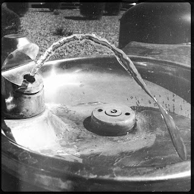

Recovered weblog entry
Fluid motion

You know what? I'm grateful for this little phone, with a camera that allows me to take a portion of my day and capitalize on it. I'm not sure the source of these poignant feelings, but I'm acutely aware of just how lucky I am. The big things, the little things, the good and the bad; everything coalesces into this fine adventure I call my life. So with that said, enjoy another black and white pic. It's my current weapon of choice. Lens: Bettie XL
Film: Rock BW-11